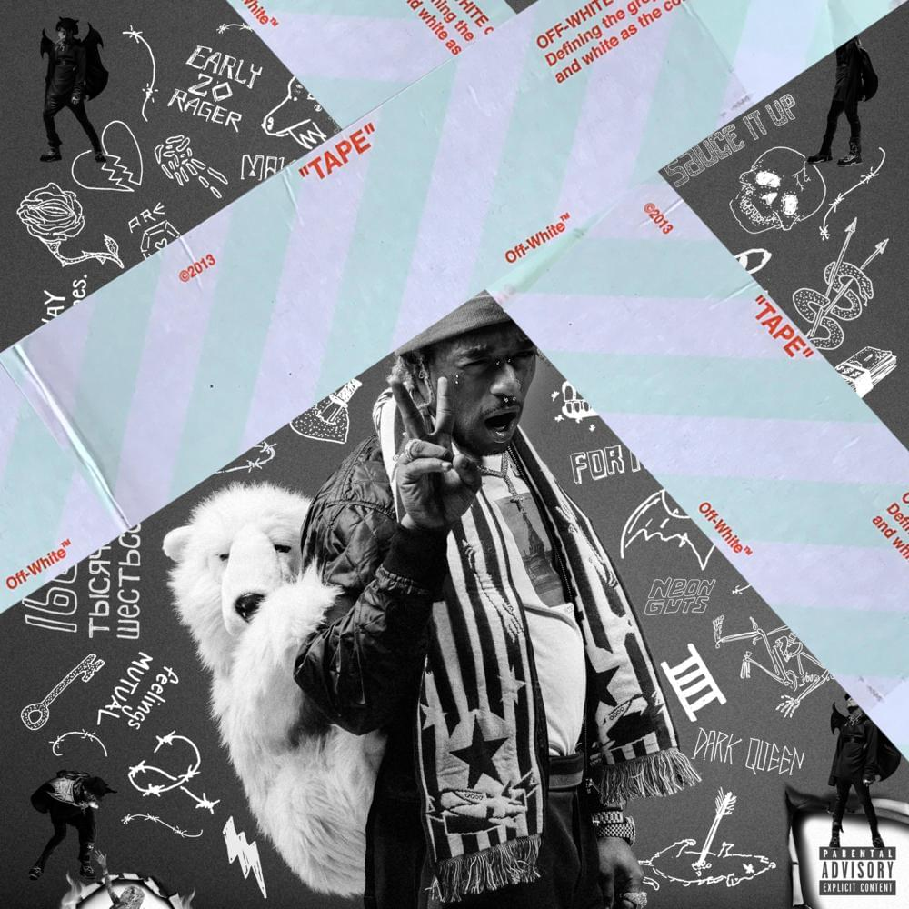
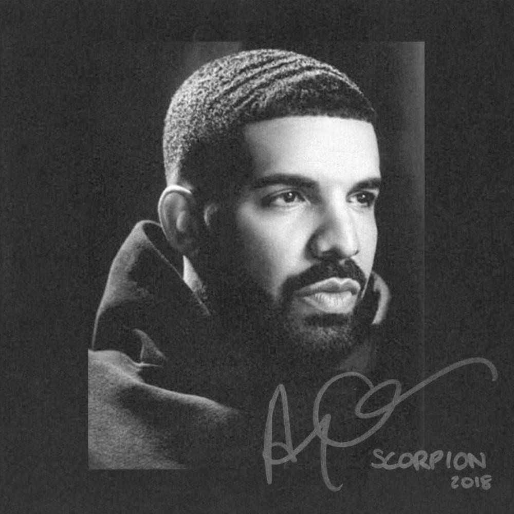

Byron's Index.html Page for INST377
Check out my music!
Music Im Currently Listening to:
Travis Scott
Latest Album

Description:
Astroworld (stylized in all caps) is the third studio album by American rapper and record producer Travis Scott.
It was released on August 3, 2018, by Cactus Jack Records, Epic Records, and Grand Hustle Records.
The album follows his second studio album Birds in the Trap Sing McKnight (2016), and his collaborative
album Huncho Jack, Jack Huncho (2017) with Quavo. The album features guest vocals from Kid Cudi, Frank Ocean,
Drake, The Weeknd, James Blake, Swae Lee, Gunna, Philip Bailey, Nav, 21 Savage, Quavo, Takeoff, Juice Wrld, Sheck Wes,
and Don Toliver, among others. Production was handled by multiple producers, including Mike Dean, Allen Ritter, Hit-Boy,
WondaGurl, Tay Keith, Tame Impala, Frank Dukes, Sonny Digital, and Thundercat.
Lil Uzi Vert
Latest Album

Description:
Luv Is Rage 2 is the debut studio album by American rapper Lil Uzi Vert. It was released on August 25, 2017,
by Atlantic Records and Generation Now. The album serves as a sequel to Uzi's commercial debut mixtape
Luv Is Rage (2015). It features guest appearances from The Weeknd, Oh Wonder and Pharrell Williams.
Luv Is Rage 2 was supported by three singles: "XO Tour Llif3", "The Way Life Goes" and "Sauce It Up".
The album debuted at number one on the US Billboard 200 with 135,000 album-equivalent units, and received
positive critical reviews from critics.
Drake
Latest Album

Description:
Scorpion is the fifth studio album by Canadian rapper Drake. It was released on June 29, 2018, by Cash Money Records,
Republic Records, and Young Money Entertainment. Scorpion is a double album consisting of 25 tracks. Its first disc is
primarily hip hop, whilst its second disc has been described as R&B and pop. Scorpion features guest appearances from
Jay-Z and Ty Dolla Sign as well as posthumous appearances from Michael Jackson and Static Major, and additional vocals
by a variety of artists, including PartyNextDoor, Future, Lil Wayne, Nicki Minaj, and Nai Palm. It is executively produced
by Drake himself, alongside frequent collaborator Noah "40" Shebib and manager Oliver El-Khatib, and features production
from 40, alongside a variety of producers, including Allen Ritter, No I.D., Boi-1da, DJ Premier, DJ Paul, Tay Keith,
T-Minus, Murda Beatz, Cardo, and Noel Cadastre, among others.
Young Thug
Latest Album

Description:
So Much Fun is the debut studio album by American rapper Young Thug, it was released on August 16, 2019,
by 300 Entertainment and Atlantic Records. The album was executive produced by J. Cole. It features guest
appearances from Future, Machine Gun Kelly, Gunna, Lil Baby, Lil Uzi Vert, Lil Duke, 21 Savage, Doe Boy,
Lil Keed, Quavo, Juice Wrld, Nav, J. Cole, and Travis Scott. The album was supported by its lead single,
"The London". So Much Fun received generally positive reviews and debuted atop the Billboard 200, becoming
Young Thug's first US number-one album.